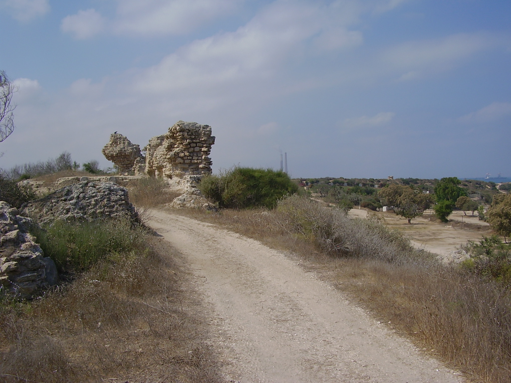

Ashkelon (Ancient City)

- Find Name
- Ashkelon (Ancient City)
- Description
- One of the five Philistine cities, a Canaanite port first, then a Philistine city from the 12th century BC, destroyed by Nebuchadnezzar in 604 BC. The Leon Levy Expedition (1985-2016) uncovered a Middle Bronze Age earthen rampart with one of the world's earliest arched mudbrick gates and a silver-plated bronze calf shrine beside it; the first Philistine cemetery ever found (11th-8th centuries BC), whose DNA was the first Philistine DNA studied; a 604 BC Babylonian destruction layer with a marketplace, wine and weights; and over 1,000 Persian-period dog burials. This entry covers the city and its excavations; no separate Ashkelon object entry is duplicated here.
- Historical Period
- Bronze Age–Crusader
- Evidence Class
- Contextual
- Interpretations
- The identification of the site with biblical Ashkelon is secure, and the 604 BC destruction layer is widely tied to Nebuchadnezzar. The Persian-period dog cemetery is debated: Stager proposed a Phoenician healing cult (dogs licking wounds), while Wapnish and Hesse argued for ordinary urban dog burial; no temple for the cult has been found, so the cult reading is presented here as a hypothesis, not a fact.
- Alternative Names
- Ascalon; Tel Ashkelon
- Related Places
- Related Books
- Related People
- Scripture Illuminated
- Biblical Significance
- Ashkelon is the Philistine enemy city of Samson's raid (Judges 14:19), the Philistine lordship of 1 Samuel 6:17, and the doomed city of Jeremiah's oracle (Jeremiah 47). Its gate, cemetery and burnt marketplace turn those names into a place: a real port, with real Philistine dead, burnt by the same Babylonian king who would burn Jerusalem eighteen years later.
- Artifact Date
- c. 2nd millennium BC - AD 1270 (Canaanite, Philistine, Roman and later city)
- Current Location
- In situ, Ashkelon National Park, Israel
- Date Discovered
- 1920-1922 (Garstang); 1985-2016 (Leon Levy Expedition, Stager and Master)
- Discovery Location
- Ashkelon National Park, Mediterranean coast, Israel
- Timeline Era
- Divided Monarchy
Awaiting Review Not yet checked against scholarly sources. Treat its claims as provisional until this entry is reviewed. About verification
Last reviewed: not yet reviewed